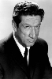
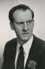
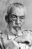

Country:United States, 77 minutes
Spoken languages:English
Genres:Family, Fantasy, Animation, Adventure, Sci-Fi
Director(s):Jules Bass, Arthur Rankin, Jr.
Writer(s):J.R.R. Tolkien, Romeo Muller
Video Codec:Unknown
Number: 2487


Certification:PG
Storyline:
Bilbo Baggins the Hobbit was just minding his own business, when his occasional visitor Gandalf the Wizard drops in one night. One by one, a whole group of dwarves drop in, and before he knows it, Bilbo has joined their quest to reclaim their kingdom, taken from them by the evil dragon Smaug. The only problem is that Gandalf has told the dwarves that Bilbo is an expert burglar, but he isn't...
Cast:   
Medium: VHS tape,
Loaned: No
Aspect ratio: Unknown